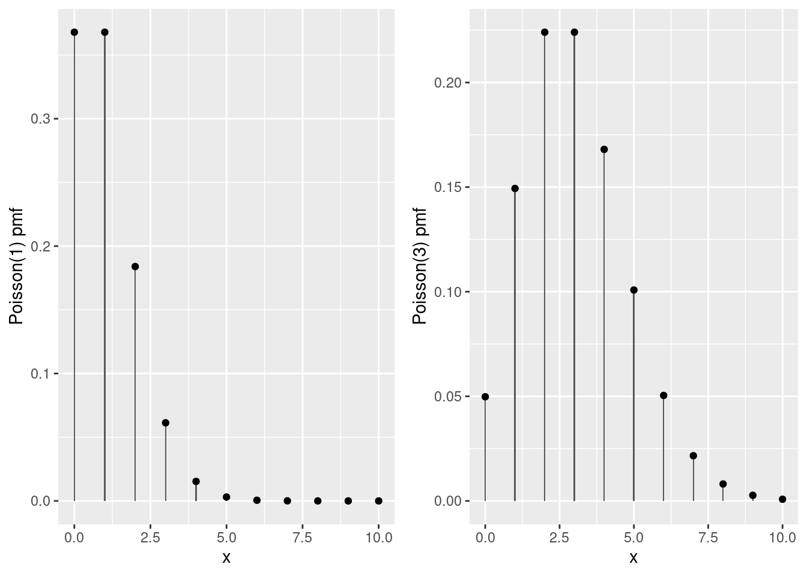
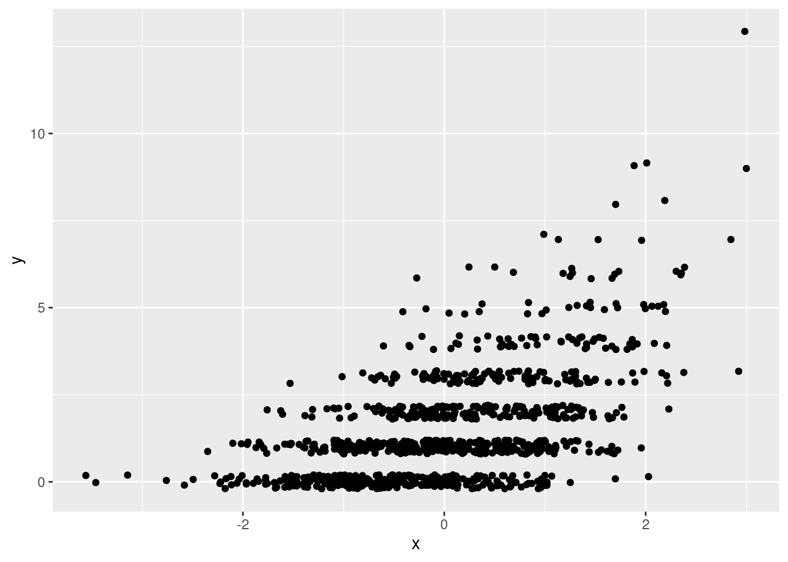
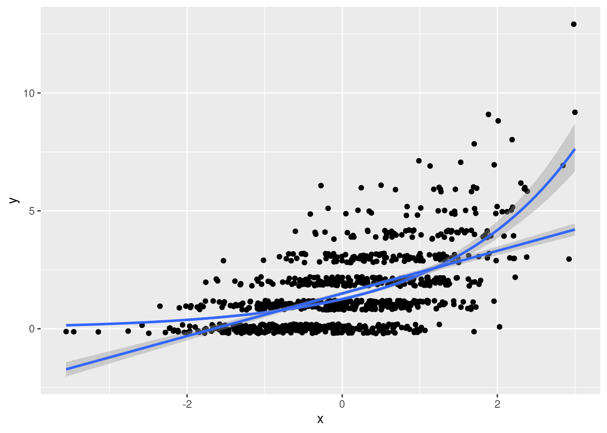
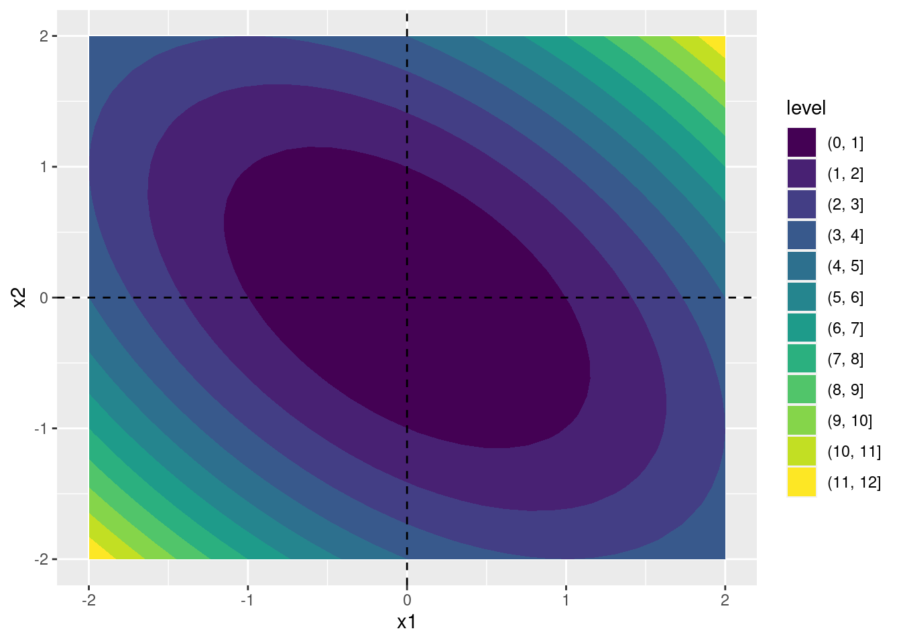
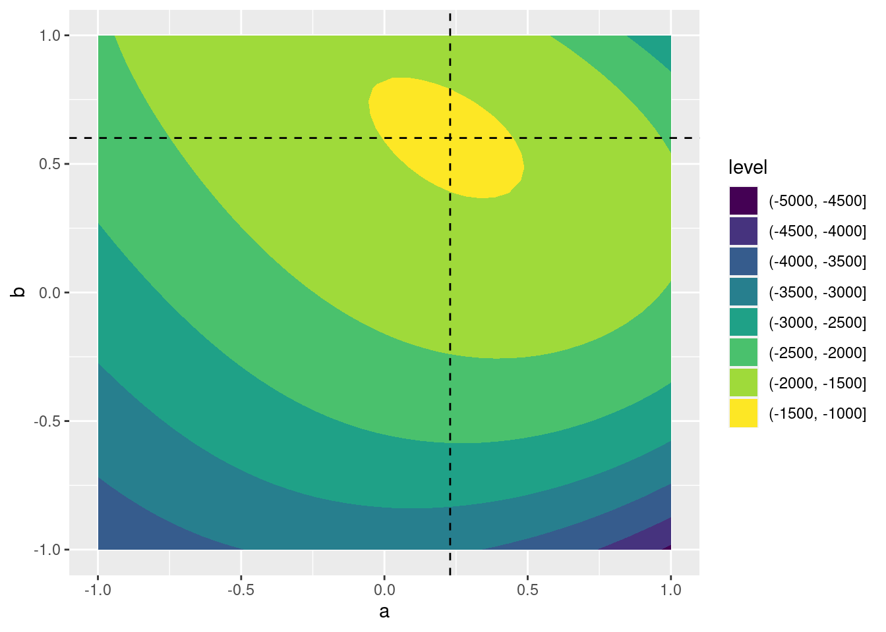

Lesson 10 Poisson Regression and Maximum Likelihood Estimation
10.1 The Poisson Distribution

Siméon Denis Poisson
Suppose we wanted a probability distribution for counts, values in the set \(\{0, 1, 2, 3, ...\}\). One possible candidate is the Binomial\((n,p)\) distribution: \[ P(X = x) = \binom{n}{x} p^x(1 - p)^{n-x}, \quad x\in \{0, 1, 2, ..., n\}. \] If there are \(n\) independent opportunities for some event to occur, and each occurrence has probability \(p\), then the Binomial\((n,p)\) distribution gives us the probability of observing \(x\) events. But what if we don't know \(n\)? Or what if, in principle at least, there's no clear "upper bound" for our count? An example may help to make this problem clearer. If I bake a dozen cupcakes and bring them to a bake sale, then perhaps the number that I sell could be modeled as a Binomial\((12,p)\) random variable.27 But what if we wanted a model for the total number of cupcakes sold in the UK on a given day? We don't know how many cupcakes were baked, so we don't know \(n\).
To put it another way, the Binomial distribution is really a model for proportions. Sure, \(X\) is a count, but it's a count relative to some known maximum number of events. When we talk about count data, what we really have in mind is a situation where no such maximum exists, or where the maximum is extremely large relative to the number of events that are likely to occur. The classic probability model for data with these features is the Poisson\((\mu)\) distribution: \[ P(X=x) = \frac{e^{-\mu}\mu^x}{x!}, \quad x \in \{0, 1, 2, 3, ...\}. \] Unlike the Binomial distribution, the Poisson distribution has no upper bound: it has positive probability of spitting out any non-negative integer, no matter how large. Its single parameter \(\mu\), typically called the Poisson rate, can take on any continuous value greater than zero. This parameter quantifies the frequency with which events occur: a higher rate means we expect to see higher counts. Indeed, if \(X \sim \text{Poisson}(\mu)\) then \(E[X] = \mu\); the Poisson rate parameter equals the expected count. The Poisson distribution also has a feature called equidispersion: its variance equals its mean. In the exercises that follow, you'll explore some further properties of the Poisson distribution.
10.1.1 Exercise
- Use the R functions
dpois(),ppois(), andrpois()to:- Plot the probability mass function of a Poisson(1), Repeat for a Poisson(3) random variable.
geom_col() is a useful alternative to geom_bar() that "leaves the data alone" rather than counting observations in different bins.
library(tidyverse)
library(gridExtra)
poisson_probs <- tibble(x = 0:10) %>%
mutate(p1 = dpois(x, 1), p3 = dpois(x, 3))
pois1 <- ggplot(poisson_probs) +
geom_col(aes(x, p1), width = 0.05) +
geom_point(aes(x, p1)) +
ylab('Poisson(1) pmf')
pois3 <- ggplot(poisson_probs) +
geom_col(aes(x, p3), width = 0.05) +
geom_point(aes(x, p3)) +
ylab('Poisson(3) pmf')
grid.arrange(pois1, pois3, ncol = 2)
(b) Simulate a large number of draws from both a Poisson(1) and Poisson(3) distribution. Check that the mean and variance of the simulation draws are approximately equal.set.seed(1875)
x1 <- rpois(1e5, 1)
cbind('mean' = mean(x1), 'var' = var(x1))## mean var
## [1,] 0.99644 0.9950373x3 <- rpois(1e5, 3)
cbind('mean' = mean(x3), 'var' = var(x3))## mean var
## [1,] 2.996 2.996454- If \(X_1 \sim \text{Poisson}(\mu_1)\) is independent of \(X_2 \sim \text{Poisson}(\mu_2)\) then it can be shown that \(X_1 + X_2 \sim \text{Poisson}(\mu_1 + \mu_2)\). Check this property using your simulation draws from the previous part.
The count() function from dplyr is very helpful if you need to construct an empirical frequency distribution, and geom_col() is useful too!
library(dplyr)
tibble(x1, x3) %>%
mutate(x4 = x1 + x3) %>%
count(x4) %>%
rename(realization = x4) %>%
mutate(empirical = n / sum(n),
theoretical = dpois(realization, 4)) %>%
select(realization, empirical, theoretical) %>%
round(4) %>%
print(n = 15)## # A tibble: 16 × 3
## realization empirical theoretical
## <dbl> <dbl> <dbl>
## 1 0 0.0181 0.0183
## 2 1 0.0734 0.0733
## 3 2 0.148 0.146
## 4 3 0.196 0.195
## 5 4 0.195 0.195
## 6 5 0.156 0.156
## 7 6 0.104 0.104
## 8 7 0.0596 0.0595
## 9 8 0.0289 0.0298
## 10 9 0.013 0.0132
## 11 10 0.0054 0.0053
## 12 11 0.002 0.0019
## 13 12 0.0007 0.0006
## 14 13 0.0002 0.0002
## 15 14 0.0001 0.0001
## # … with 1 more row- For \(\mu\) large, the Poisson\((\mu)\) probability mass function is well-approximated by a Normal\((\mu, \mu)\) density. Use
dnorm()anddpois()to check the quality of this approximation for \(\mu = 20\). Can you explain why this approximation holds?
tibble(x = 0:40) %>%
mutate(normal = dnorm(x, 20, sqrt(20)),
poisson = dpois(x, 20)) %>%
round(4) %>%
print(n = 41)## # A tibble: 41 × 3
## x normal poisson
## <dbl> <dbl> <dbl>
## 1 0 0 0
## 2 1 0 0
## 3 2 0 0
## 4 3 0.0001 0
## 5 4 0.0001 0
## 6 5 0.0003 0.0001
## 7 6 0.0007 0.0002
## 8 7 0.0013 0.0005
## 9 8 0.0024 0.0013
## 10 9 0.0043 0.0029
## 11 10 0.0073 0.0058
## 12 11 0.0118 0.0106
## 13 12 0.018 0.0176
## 14 13 0.0262 0.0271
## 15 14 0.0363 0.0387
## 16 15 0.0477 0.0516
## 17 16 0.0598 0.0646
## 18 17 0.0712 0.076
## 19 18 0.0807 0.0844
## 20 19 0.087 0.0888
## 21 20 0.0892 0.0888
## 22 21 0.087 0.0846
## 23 22 0.0807 0.0769
## 24 23 0.0712 0.0669
## 25 24 0.0598 0.0557
## 26 25 0.0477 0.0446
## 27 26 0.0363 0.0343
## 28 27 0.0262 0.0254
## 29 28 0.018 0.0181
## 30 29 0.0118 0.0125
## 31 30 0.0073 0.0083
## 32 31 0.0043 0.0054
## 33 32 0.0024 0.0034
## 34 33 0.0013 0.002
## 35 34 0.0007 0.0012
## 36 35 0.0003 0.0007
## 37 36 0.0001 0.0004
## 38 37 0.0001 0.0002
## 39 38 0 0.0001
## 40 39 0 0.0001
## 41 40 0 0Let \(X \sim \text{Poisson}(n)\). By the result from the preceding part, we can view \(X\) as the sum of \(n\) independent and identically distributed Poisson\((1)\) random variables \(X_1, X_2, ..., X_n\). Because these are Poisson, each has mean and variance equal to one. Thus, by the central limit theorem \[ \sqrt{n}(\bar{X}_n - 1) \rightarrow_d \text{N}(0,1) \] so for large \(n\) we have the approximation \(\sqrt{n}(\bar{X}_n - 1) \approx Z\) where \(Z \sim\text{N}(0,1)\). Re-arranging, \[ n \bar{X}_n \approx n + \sqrt{n} Z \sim N(n, n) \] and \(n\bar{X}_n\) is precisely the random variable that wanted to approximate: a Poisson\((n)\).
- The Poisson\((\mu)\) distribution is closely related to the Binomial distribution. In fact, the Poisson\((\mu)\) probability mass function is the limit of the Binomial\((n,p)\) probability mass function as \(n\rightarrow \infty\) and \(p \rightarrow 0\) such that \(np\rightarrow \mu\). In other words, if \(p\) is small and \(n\) is large, then the Binomial\((n,p)\) distribution is extremely similar to the Poisson\((np)\) distribution. Use
dbinom()anddpois()to verify the quality of this approximation for \(n = 1000\) and \(p = 0.005\).
n <- 1000
p <- 0.005
tibble(x = 0:16) %>%
mutate(poisson = dpois(x, n * p), binomial = dbinom(x, n, p)) %>%
round(4) %>%
print(n = 40)## # A tibble: 17 × 3
## x poisson binomial
## <dbl> <dbl> <dbl>
## 1 0 0.0067 0.0067
## 2 1 0.0337 0.0334
## 3 2 0.0842 0.0839
## 4 3 0.140 0.140
## 5 4 0.176 0.176
## 6 5 0.176 0.176
## 7 6 0.146 0.147
## 8 7 0.104 0.105
## 9 8 0.0653 0.0652
## 10 9 0.0363 0.0361
## 11 10 0.0181 0.018
## 12 11 0.0082 0.0081
## 13 12 0.0034 0.0034
## 14 13 0.0013 0.0013
## 15 14 0.0005 0.0005
## 16 15 0.0002 0.0002
## 17 16 0 0- In this exercise, I hope to convince you that computing the Poisson probability mass function is harder than it looks! For this part you will need to use the R functions
factorial()and, later on,lfactorial().- Suppose that \(X \sim \text{Poisson}(171)\). Calculate the probability that \(X\) equals its mean two different ways: first using
dpois()and second by direct calculation using the Poisson probability mass function from above. Why do your results disagree?
- Suppose that \(X \sim \text{Poisson}(171)\). Calculate the probability that \(X\) equals its mean two different ways: first using
c('by hand' = exp(-171) * 171^171 / factorial(171), 'dpois' = dpois(171, 171))## by hand dpois
## NaN 0.03049301(b) Write out an expression for the *natural log* of the Poisson probability mass function. Can you think of a way to use this expression to solve the problem you encountered in the preceding part? log_prob <- 171 * log(171) - 171 - lfactorial(171)
c('by hand' = exp(log_prob), 'dpois' = dpois(171, 171))## by hand dpois
## 0.03049301 0.0304930110.2 The Poisson Regression Model
Counts are by definition positive or zero, but a linear regression model of the form \(Y = \alpha + \beta X + \epsilon\) will necessarily make negative predictions for \(Y\) for certain values of \(X\). (A straight line with that isn't perfectly flat will eventually cross the x-axis.) We might try to solve this problem by running a regression with \(\log Y\) in place of \(Y\). But just like the old lady who swallowed a fly, this would leave us with yet another problem to solve: a count of zero makes \(\log Y\) equal negative infinity! This might motivate us to add one to our counts before taking logs, a perfectly reasonable idea. But at this point we have a very different model than the one we started with.
A more elegant solution is to start off by writing down a probability model that guarantees our predictions will take values in the appropriate range. For count outcomes, the most popular model of this form is Poisson regression.28 The idea is fairly simple: we model \(Y_i\) as a Poisson random variable \(\mu_i\) where \(\mu_i\) is a positive function of \(X_i\). The "canonical" version of Poisson regression posits a linear relationship between \(X_i\) and \(\log(\mu_i)\), namely
\[
Y_i|X_i \sim \text{indep. Poisson}(\mu_i), \quad \mu_i \equiv \exp(X_i'\beta).
\]
Using what we learned about the Poisson distribution from above, we can write down the (conditional) likelihood function for this problem as follows:
\[
L(\beta) = \prod_{i=1}^n f(Y_i|X_i,\beta) = \prod_{i=1}^n \frac{e^{-\mu_i}\mu_i^{Y_i}}{Y_i!}
\]
Remember that the likelihood is a function of the parameters that holds the data fixed. The likelihood for this problem takes the form of a product because our observations of \(Y_i\) are independent conditional on \(X_i\) so that
\[
f(Y_1, Y_2, ..., Y_n|X_1, X_2, ..., X_n) = f(Y_1|X_1) \times f(Y_2|X_2) \times \cdots \times f(Y_n|X_n).
\]
Taking logarithms of the likelihood, we obtain the (conditional) log-likelihood as follows:
\[
\begin{aligned}
\ell(\beta) &= \sum_{i=1}^n \left[Y_i \log(\mu_i) - \mu_i - \log(Y_i!)\right]\\
&=\sum_{i=1}^n \left[ Y_i (X_i'\beta) - \exp(X_i'\beta) - \log(Y_i!) \right]
\end{aligned}
\]
It's easy to estimate the parameter \(\beta\) in this model using the glm() function in R. But before we learn about this we need some data from a Poisson regression model! You'll generate some in the following exercise.
10.2.1 Exercise
Simulate 1000 observations from a Poisson regression model in which \(\mu_i = \exp(\alpha + \beta X_i)\) with \(\alpha = 0.2\) and \(\beta = 0.6\). Draw your \(X_i\) values form a standard normal distribution, store your results as columns named x and y in a tibble called pois_dat, and plot your simulated observations. I suggest using jittering to make the plot easier to read.
library(tidyverse)
set.seed(1983)
n <- 1e3
x <- rnorm(n)
a <- 0.2
b <- 0.6
mu <- exp(a + b * x)
y <- rpois(n, mu)
pois_dat <- tibble(x, y)
rm(x, y, a, b, mu, n) # Clean up!
ggplot(pois_dat, aes(x, y)) +
geom_jitter(height = 0.2) 
10.3 What's a link function?
To fit a Poisson regression in R we use the glm() function, much as we did for logistic regression in an earlier lesson. The only substantive difference is that we set family = poisson(link = 'log') rather than family = binomial(link = 'logit'). But this raises a question that we've avoided so far: what's this "link" thing that we keep having to specify inside of glm()?
A generalized linear model is a generalization of linear regression that allows to model a non-linear predictive relationship between \(Y\) and \(X\). In the Poisson regression model from above, \(Y_i|X_i \sim \text{Poisson}\big( \exp(X_i'\beta)\big)\). Since the rate parameter of a Poisson random variable equals the mean of that random variable, our model posits that
\[
E[Y_i|X_i] = \exp(X_i'\beta) \quad
\text{ or equivalently } \quad \log \left( E[Y_i|X_i] \right) = X_i'\beta.
\]
Abstracting slightly, what we have is a model in which \(g\left(E[Y_i|X_i] \right)\) equals \(X_i'\beta\) for some function \(g(\cdot)\). You've already seen two other models that fit into this framework: linear regression has \(g(z) = z\) and logistic regression has \(g(z) = \log[z/(1 - z)]\). In generalized linear model terminology, the function \(g(\cdot)\) is called the link function while \(X_i'\beta\) is called the linear predictor. To specify a glm() in R we provide the family, the probability distribution of \(Y\) e.g. binomial or poisson, and the link function. The formula inside of glm() is where we specify the regressors \(X_i\) that enter the linear predictor.
When we make predictions based on a generalized linear model, we have two options. We can either ask for predictions on the scale of the linear predictor \(X_i'\beta\), the default behavior of predict() when applied to a glm() object, or on the scale of the response \(Y_i\) by setting type = 'response' in predict() or type.predict = 'response' in augment() from broom. Typically we're most interested in predictions on the scale of \(Y_i\). If we want residuals for a glm() object there are many different options. Setting type = 'response' gives residuals computed as the difference between \(Y_i\) and the prediction \(\widehat{Y}_i\) that we would obtain from predict() with type = 'response'.
At this point you know quite a lot about R. So rather than providing you with examples of how all the skills you've learned so far can be applied to Poisson regression, I'll ask you to discover this for yourself in the following exercises!
10.3.1 Exercise
- Fit both a linear regression,
lreg, and a Poisson regression with a log link function,preg, to your simulated data from the preceding exercise. Display your results in a nicely-formatted table of regression output.
library(modelsummary)
lreg <- lm(y ~ x, data = pois_dat)
preg <- glm(y ~ x, family = poisson(link = 'log'), data = pois_dat)
modelsummary(list('OLS' = lreg, 'Poisson' = preg))| OLS | Poisson | |
|---|---|---|
| (Intercept) | 1.498 | 0.229 |
| (0.042) | (0.030) | |
| x | 0.904 | 0.601 |
| (0.042) | (0.026) | |
| Num.Obs. | 1000 | 1000 |
| R2 | 0.316 | |
| R2 Adj. | 0.315 | |
| AIC | 3391.8 | 2922.9 |
| BIC | 3406.6 | 2932.8 |
| Log.Lik. | −1692.919 | −1459.472 |
| F | 460.194 | 520.670 |
| RMSE | 1.32 | 1.07 |
- Plot the two regression models from the preceding part along with the data. As above I suggest using jittering to make the plot easier to read.
ggplot(pois_dat, aes(x, y)) +
geom_jitter(height = 0.2) +
geom_smooth(method='glm', method.args = list(family = "poisson"), formula = y ~ x) +
geom_smooth(method='lm', formula = y ~ x)
- Use the results of
lregandpregto predict \(Y_i\) when \(X_i = -2\). Comment on your results.
mydat <- data.frame(x = -2)
predict(preg, newdata = mydat, type = 'response')## 1
## 0.3782432predict(lreg, newdata = mydat) # don't need to set type for linear regression!## 1
## -0.3090112- Verify numerically that the residuals,
type = 'response', ofpregsum to zero and are uncorrelated withx.
u <- residuals(preg, type = 'response')
mean(u)## [1] -1.373208e-11cor(u, pois_dat$x)## [1] 4.785601e-12- Verify numerically that the average partial effect of
xin your fitted Poisson regression modelpregequals the sample mean of \(Y_i\) multiplied by the estimated coefficient \(\widehat{\beta}\). Compare this to the corresponding OLS coefficient. (See here for further discussion.)
all.equal(mean(predict(preg, type = 'response')) * coef(preg)[2],
mean(pois_dat$y) * coef(preg)[2])## [1] TRUE- Fit a Poisson regression model with only an intercept to your simulation data from above and call the result
preg0. Does the estimated coefficient make sense? Explain briefly.
preg0 <- glm(y ~ 1, family = poisson(link = 'log'), data = pois_dat)
c(coef(preg0), log(mean(pois_dat$y)))## (Intercept)
## 0.4226499 0.4226499- To estimate the Poisson regression coefficients in our model from above,
glm()maximizes the log likelihood function over the parameters \(\alpha\) and \(\beta\). This is because our model specified \(\mu_i = \exp(\alpha + \beta X_i)\). Now suppose that we ignoredxcompletely and wrote down a likelihood with as many parameters as observations \(\mu_1, \mu_2, ..., \mu_n\). This is called the saturated model. What is the maximum likelihood estimator for this vector of parameters? What is the value of the maximized log-likelihood function?
The solution sets \(Y_i = \mu_i\) for each \(i\). Notice that we need to treat \(y \log(y)\) as zero for \(y = 0\) in the calculation that follows:
library(magrittr)
pois_dat %$%
sum(ifelse(y > 0, y * log(y), 0) - y - lfactorial(y))## [1] -889.167710.4 Dude, where's my R-squared?

Square du R
Recall that the glance() function from the broom package extracts the various measures of "fit" from an estimated model. Applying it to preg from above gives the following:
glance(preg)## # A tibble: 1 × 8
## null.deviance df.null logLik AIC BIC deviance df.residual nobs
## <dbl> <int> <dbl> <dbl> <dbl> <dbl> <int> <int>
## 1 1668. 999 -1459. 2923. 2933. 1141. 998 1000If we try the same with a fitted logistic regression model, we'll obtain the same summary statistics:
two_truths <- read_csv('https://ditraglia.com/data/two-truths-and-a-lie-2022-cleaned.csv')
two_truths_reg <- glm(guessed_right ~ certainty, family = binomial(link = 'logit'),
data = two_truths)
glance(two_truths_reg) ## # A tibble: 1 × 8
## null.deviance df.null logLik AIC BIC deviance df.residual nobs
## <dbl> <int> <dbl> <dbl> <dbl> <dbl> <int> <int>
## 1 69.2 49 -33.8 71.6 75.5 67.6 48 50Who are these strange measures of fit, and what have they done with my R-squared?! Recall that the R-squared of a linear regression model is defined as \[ R^2 = 1 - \frac{\sum_{i=1}^n \widehat{\epsilon}_i^2}{\sum_{i=1}^n (Y_i - \bar{Y})^2}. \] where \(\widehat{\epsilon}_i = Y_i - \widehat{Y}_i\) and \(\widehat{Y}_i = X_i'\widehat{\beta}\). The R-squared is a unitless quantity between zero and one that measures how closely our observations cluster around the regression line (or hyperplane). Larger values mean that they cluster more tightly around the line; smaller values mean that they cluster less tightly. A related measure is the residual standard deviation, aka the standard error of the regression: \[ \widehat{\sigma} = \sqrt{\frac{\sum_{i=1}^n \widehat{\epsilon}_i^2}{n-k}}. \] Notice that \(\widehat{\sigma} \approx S_Y\sqrt{1 - R^2}\), where \(S_Y\) is the sample standard deviation of \(Y\). Whereas R-squared is unitless, the residual standard deviation has the same units as \(Y\), giving it a more natural interpretation.
10.4.1 AIC and BIC
Both R-squared and residual standard deviation are measures of in-sample fit. They tell us something about how well a linear regression model predicts the \(Y\) observations that were used to estimate its coefficients. Unfortunately in-sample fit can given an extremely misleading impression of how well a model will predict out-of-sample. (Remember that your R-squared can never decrease even if the predictors you add to your model are literally irrelevant!) But even if we are content to report a measure of in-sample fit, neither R-squared nor the residual standard deviation are immediately applicable to generalized linear models. For this reason the measures of fit calculated by glm() are instead based on the maximized log-likelihood. This is what the column logLik from our glance() output from above reports:
glance(preg)## # A tibble: 1 × 8
## null.deviance df.null logLik AIC BIC deviance df.residual nobs
## <dbl> <int> <dbl> <dbl> <dbl> <dbl> <int> <int>
## 1 1668. 999 -1459. 2923. 2933. 1141. 998 1000We can extract this quantity from a fitted glm() object directly by using the logLik() function. For example:
logLik(preg)## 'log Lik.' -1459.472 (df=2)Just like R-squared, the maximized log-likelihood can never decreases as we add more predictors to a model, even if they're completely irrelevant. For example, we can compare the log-likelihood of the "null model" preg0 that contains only an intercept, to that of preg, and to the likelihood of the "saturated" model that contains a separate coefficient for each y-observation, computed in the exercise above:
ll_fitted <- logLik(preg)
ll_null <- logLik(preg0)
ll_saturated <- pois_dat %$%
sum(ifelse(y > 0, y * log(y), 0) - y - lfactorial(y))
c('null' = ll_null, 'fitted' = ll_fitted, 'saturated' = ll_saturated)## null fitted saturated
## -1723.2250 -1459.4717 -889.1677But just because the log-likelihood has increased, that doesn't mean we have a better predictive model. As you will show in the exercise below, both ll_fitted and ll_saturated are larger than the log-likelihood evaluated at the true model parameters \(\alpha = 0.2\) and \(\beta = 0.6\) from our simulation design! But clearly if we wanted to predict new data from the model, there's no way to improve upon the true parameter values.
This is the problem that information criteria attempt to solve. We don't have time to do this subject justice here. (For more details, see my lecture notes and slides.) To make a long story short, information criterion such as Akaike's Information Criterion (AIC) and the Bayesian Information Criterion (BIC) penalize the maximized log-likelihood based on the number of free parameters in the model: the more parameters, the bigger the penalty. When given a glm() model as input, the R functions AIC() and BIC() compute the following:
\[
\begin{aligned}
\text{AIC} &\equiv -2 \left[\text{(Log-Likelihood)} - \text{(#Parameters)} \right] \\
\text{BIC} &\equiv -2 \left[\text{(Log-Likelihood)} - \frac{1}{2}\text{(#Parameters)} \times \log\text{(#Observations)} \right]
\end{aligned}
\]
The multiplication by \(-2\) is conventional but arbitrary. Be careful: some books and software packages use a different scaling! Now we can compute the AIC and BIC three different ways, using AIC() and BIC() versus glance() versus "by hand," to make sure that they agree:
n_params <- length(coef(preg))
n_obs <- nrow(pois_dat)
c('AIC' = AIC(preg),
'glance' = glance(preg)$AIC,
'by hand' = -2 * (logLik(preg) - n_params))## AIC glance by hand
## 2922.943 2922.943 2922.943c('BIC' = BIC(preg),
'glance' = glance(preg)$BIC,
'by hand' = -2 * (logLik(preg) - 0.5 * n_params * log(n_obs)))## BIC glance by hand
## 2932.759 2932.759 2932.75910.4.2 Deviance and Null Deviance
There are two more measures of fit that appear in the summary output from glance() when applied to a glm() object. The deviance, also known as the residual deviance is defined as two times the difference between the log likelihood of the saturated model minus that of the fitted model:
# Deviance, aka residual deviance
c('by hand' = 2 * (ll_saturated - ll_fitted),
'deviance' = glance(preg)$deviance)## by hand deviance
## 1140.608 1140.608whereas the null deviance is the same quantity except with the log-likelihood of the null model in place of the fitted model, i.e. the model that includes only an intercept:
# Null deviance
c('by hand' = 2 * (ll_saturated - ll_null),
'null deviance' = glance(preg)$null.deviance)## by hand null deviance
## 1668.115 1668.115We won't delve into these quantities in any detail, but it's worth making two points. First, notice that both the deviance and the null deviance equal a constant multiplied by the log of a likelihood ratio statistic. Second, it turns out that the deviance of a linear regression model is proportional to the sum of squared residuals. As such we can think of the deviance as a "version" of the RSS for generalized linear models.
10.4.3 Exercises
- Write a function called
pois_ll()that evaluates the log-likelihood function forpois_dat. Your function should take a single argumentparams. This is a vector whose first element is the value of \(\alpha\) and whose second element is the value of \(\beta\). It should return the log-likelihood of the model \(Y_i|X_i \sim \text{Poisson}(\mu_i)\) for \(\mu_i= \exp(\alpha + \beta X_i)\) where \(\{(Y_i, X_i)\}_{i=1}^n\) are the simulation drawsxandyfrompois_dat. To make sure that your function is working correctly, evaluate it at the appropriate parameter values, check it againstlogLik(preg)andlogLik(preg0)from above.
pois_ll <- function(pars) {
a <- pars[1]
b <- pars[2]
y <- pois_dat$y
x <- pois_dat$x
linear_predictor <- a + b * x
sum(y * (linear_predictor) - exp(linear_predictor) - lfactorial(y))
}
c('pois_ll' = pois_ll(coef(preg)), 'logLik' = logLik(preg))## pois_ll logLik
## -1459.472 -1459.472c('pois_ll' = pois_ll(c(coef(preg0), 0)), 'logLik' = logLik(preg0))## pois_ll logLik
## -1723.225 -1723.225- Use
pois_ll()to calculate the log-likelihood ofpois_datat the true model parameters \(\alpha = 0.2\) and \(\beta = 0.6\) that were used to generatexandyinpois_dat. Compare your result toll_fittedandll_saturatedfrom above and discuss briefly.
c('true' = pois_ll(c(0.2, 0.6)), 'fitted' = ll_fitted, 'saturated' = ll_saturated)## true fitted saturated
## -1460.1448 -1459.4717 -889.1677- In fact,
ll_fittedandll_saturatedcannot be lower than the value that you computed in the preceding part usingpois_ll()evaluated at the true parameter values. Explain why. - As defined above, with a scaling factor of -2, does a higher AIC/BIC indicate a model that we expect to perform better or worse in out-of-sample prediction?
- Calculate the AIC and BIC of the null and saturated models from above and compare them to the corresponding AIC and BIC values of
preg. Interpret your results.
# The saturated model has as many parameters as observations
# AIC
c('null' = AIC(preg0), 'fitted' = AIC(preg),
'saturated' = -2 * (ll_saturated - n_obs))## null fitted saturated
## 3448.450 2922.943 3778.335# BIC
c('null' = BIC(preg0), 'fitted' = BIC(preg),
'saturated' = -2 * (ll_saturated - 0.5 * n_obs * log(n_obs)))## null fitted saturated
## 3453.358 2932.759 8686.091- Verify numerically that the deviance of a Poisson regression model equals \(2 \sum_{i=1}^n Y_i \log(Y_i / \widehat{Y}_i)\).
library(broom)
preg %>%
augment(type.predict = 'response') %>%
rename(y_hat = .fitted) %>%
summarize(D = 2 * sum(ifelse(y > 0, y * log(y / y_hat), 0)))## # A tibble: 1 × 1
## D
## <dbl>
## 1 1141.glance(preg)$deviance## [1] 1140.60810.5 Roll Your Own Poisson MLE
How does glm() calculate the estimated coefficients for Poisson or logistic regression? Unlike OLS, neither of these estimators has an explicit closed-form solution. To get a hint of what's going on under the hood, we can look at the very last line of the summary() output for preg
summary(preg)##
## Call:
## glm(formula = y ~ x, family = poisson(link = "log"), data = pois_dat)
##
## Deviance Residuals:
## Min 1Q Median 3Q Max
## -2.9173 -1.0939 -0.1927 0.5520 3.2948
##
## Coefficients:
## Estimate Std. Error z value Pr(>|z|)
## (Intercept) 0.22936 0.03021 7.592 3.16e-14 ***
## x 0.60079 0.02633 22.818 < 2e-16 ***
## ---
## Signif. codes: 0 '***' 0.001 '**' 0.01 '*' 0.05 '.' 0.1 ' ' 1
##
## (Dispersion parameter for poisson family taken to be 1)
##
## Null deviance: 1668.1 on 999 degrees of freedom
## Residual deviance: 1140.6 on 998 degrees of freedom
## AIC: 2922.9
##
## Number of Fisher Scoring iterations: 5To estimate this model, glm() uses an iterative procedure called Fisher scoring, a special case of Newton's method.29 While neither has a closed-form solution, the Poisson and logistic likelihood functions are globally concave. This means that each has a unique, global maximum at the parameter values that make the score equal to zero.30 This makes both Poisson and logistic regression extremely easy optimization problems. For this reason, practically any numerical optimization routine can be used to run a Poisson or logistic regression, although some will be more efficient than others. In this case the summary() output informs us that five iterations were required before the Fisher scoring algorithm converged to the maximum likelihood estimate.
As a general rule, you should not rely on writing your own code to solve common and well-studied problems like Poisson regression. We have fantastic open-source software libraries written by experts in numerical analysis: use those instead! But there will come a time when you need to solve a problem for which code is not already available. And even when a library is available to do the heavy-lifting for you, it can be dangerous to use a library that you don't really understand. Writing your own implementation for a simple example and checking it against the results from an established library is a fantastic way to get a better understanding of your problem. One of these days you're going to have to maximize a likelihood function that isn't a special case of glm() or any other R package. The purpose of this section is to help you understand how you might go about it. Numerical optimization is a vast subject and we don't have time to do it justice here. For today we will content ourselves with learning the bare minimum that you will need to "roll your own" Poisson regression in R.
To start off we need a simple function example to experiment with. Define the function \(h(\cdot)\) as follows \[ h(\mathbf{x}) = x_1^2 + x_2^2 + x_1 x_2. \] Computing the first and second derivatives of \(h(\cdot)\) we obtain \[ \frac{\partial h}{\partial \mathbf{x}} = \begin{bmatrix} \displaystyle\frac{\partial h}{\partial x_1} \\ \displaystyle\frac{\partial h}{\partial x_2} \end{bmatrix} = \begin{bmatrix} 2 x_1 + x_2 \\ 2 x_2 + x_1 \end{bmatrix}, \quad \frac{\partial^2 h}{\partial \mathbf{x} \partial \mathbf{x}'} = \begin{bmatrix} \displaystyle\frac{\partial^2 h}{\partial x_1^2} & \displaystyle\frac{\partial^2 h}{\partial x_1 \partial x_2} \\ \displaystyle\frac{\partial h}{\partial x_1 \partial x_2} & \displaystyle\frac{\partial h}{\partial x_2^2} \end{bmatrix} = \begin{bmatrix} 2 & 1 \\ 1 & 2 \end{bmatrix} \] Because the matrix of second derivatives (the Hessian matrix) is positive definite for any value of \(\mathbf{x}\), this function is globally convex. Its unique, global minimum occurs at \(x_1 = x_2 = 0\), as we can see from this contour plot:
h <- function(x) {
x1 <- x[1]
x2 <- x[2]
x1^2 + x2^2 + x1 * x2
}
contour_dat <- expand.grid(x1 = seq(-2, 2, length.out = 30),
x2 = seq(-2, 2, length.out = 30))
contour_dat <- contour_dat %>%
rowwise() %>%
mutate(h_x = h(c_across(x1:x2)))
ggplot(contour_dat, aes(x = x1, y = x2, z = h_x)) +
geom_contour_filled() +
geom_hline(yintercept = 0, linetype = 'dashed') +
geom_vline(xintercept = 0, linetype = 'dashed')
It's a bit silly to optimize \(h(\cdot)\) given that the solution is obvious, but let's try it anyway! R's general purpose function for numerical optimization is called optim(). Given a vector par of starting values and an objective function fn, optim() uses numerical methods to approximate the minimum of fn. If you instead want to maximize fn the simplest approach is to apply a different function to optim(), one that returns -1 multiplied by fn.
Let's test it out on h() from above using intentionally horrible starting values of c(-100, 100)
results <- optim(par = c(-100, 100), fn = h)
str(results)## List of 5
## $ par : num [1:2] -0.00107 0.00634
## $ value : num 3.45e-05
## $ counts : Named int [1:2] 63 NA
## ..- attr(*, "names")= chr [1:2] "function" "gradient"
## $ convergence: int 0
## $ message : NULLresults## $par
## [1] -0.001073222 0.006340452
##
## $value
## [1] 3.454842e-05
##
## $counts
## function gradient
## 63 NA
##
## $convergence
## [1] 0
##
## $message
## NULLAs we can see, optim() returns a list. The element par contains the parameter values that minimize the objective function, while the element value contains the value of the objective function evaluated at par, and counts tells us how many iterations were needed to reach convergence. The element convergence provides a numeric code that tells us how and why the optimization routine terminated. A value of 0 means that the algorithm converged. A value of 1 means that the algorithm did not converge and instead terminated because it reached the maximum number of allowable iterations.
Notice that the solution provided by optim() is good, but not perfect. From our calculus exercise above, we know that the minimum occurs at \(x_1 = x_2 = 0\) and \(h(\mathbf{0}) = 0\). Some inaccuracy is inevitable because the algorithm terminates once the change in parameter values between iterations becomes sufficiently small but we might hope for a better approximation when optimizing such a simple function. The number of iterations required to obtain this solution also seems a bit high: 63 compared to a mere handful for the Fisher scoring algorithm used by glm() to estimate preg. Can we do better?
The answer is yes. By default, optim() uses the Nelder-Mead method, a heuristic optimization approach that doesn't rely on derivatives to update parameter values across iterations. The help file for optim() describes this approach as "slow but robust." Because \(h(\cdot)\) is such a well-behaved function (globally convex!) we don't need this robustness. And by eschewing the use of derivative information, we're leaving money on the table. Let's try a slightly different approach. We'll again use optim() but this time we'll set method = BFGS so that it uses the Broyden–Fletcher–Goldfarb–Shanno algorithm rather than Nelder-Mead. When setting method = BFGS, optim() gives us the option of supplying another function called gr that evaluates the gradient of h(). (If we don't supply gr but use BFGS, optim() will approximate the gradient numerically.) This approach gives dramatically better performance:
h_gradient <- function(x) {
x1 <- x[1]
x2 <- x[2]
c(2 * x1 + x2,
2 * x2 + x1)
}
optim(par = c(-100, 100), fn = h, gr = h_gradient, method = 'BFGS')## $par
## [1] 0 0
##
## $value
## [1] 0
##
## $counts
## function gradient
## 2 2
##
## $convergence
## [1] 0
##
## $message
## NULLWe converge in only two iterations and get the solution exactly correct, up to the precision with which R displays numerical results by default. Please don't interpret this to mean that Nelder-Mead is always a bad idea: it isn't! But for simple problems, like logit or Poisson regression, there are better alternatives.
10.5.1 Exercise
- Make a contour plot of
pois_ll()over a grid of values for \(\alpha\) and \(\beta\) ranging from -1 to 1. Use vertical and horizontal lines to indicate the maximum likelihood estimates frompreg.
poisson_contour <- expand.grid(a = seq(-1, 1, length.out = 40),
b = seq(-1, 1, length.out = 40))
poisson_contour <- poisson_contour %>%
rowwise() %>%
mutate(ll = pois_ll(c_across(a:b)))
ggplot(poisson_contour, aes(x = a, y = b, z = ll)) +
geom_contour_filled() +
geom_vline(xintercept = coef(preg)[1], linetype = 'dashed') +
geom_hline(yintercept = coef(preg)[2], linetype = 'dashed') 
- Use
optim()to maximizepois_ll()with the default method: Nelder Mead. How do your results compare to those frompreg?
mystart <- c(mean(pois_dat$y), 0)
neg_pois_ll <- function(pars) -pois_ll(pars)
results_NM <- optim(par = mystart, fn = neg_pois_ll)
results_NM## $par
## [1] 0.2290988 0.6008066
##
## $value
## [1] 1459.472
##
## $counts
## function gradient
## 53 NA
##
## $convergence
## [1] 0
##
## $message
## NULL- Repeat the preceding part, but this time use BFGS and supply a function to compute the gradient of
pois_ll(). How do the results change?
neg_pois_ll_grad <- function(pars){
a <- pars[1]
b <- pars[2]
y <- pois_dat$y
x <- pois_dat$x
u <- y - exp(a + b * x)
-1 * c(sum(u), sum(x * u))
}
results_BFGS <- optim(par = mystart, fn = neg_pois_ll, gr = neg_pois_ll_grad,
method = 'BFGS')
results_BFGS## $par
## [1] 0.2293584 0.6007881
##
## $value
## [1] 1459.472
##
## $counts
## function gradient
## 38 9
##
## $convergence
## [1] 0
##
## $message
## NULL10.6 Bonus Material: Stirling's Approximation
In the exercises above, you saw that \(171!\) is too large a number for R to represent: it evaluates to Inf. We were nevertheless able to evaluate the Poisson pmf "by hand" by taking logs and then exponentiating the result. To do this, we relied on the function lfactorial() to compute the logarithm of a factorial. But if R can't calculate \(171!\), how is it supposed to calculate the log of this quantity? This section will not explain the precise method that R uses to compute lfactorial(), but it will show you a simple and surprisingly accurate approximation to the logarithm of a factorial that can be very useful in practice.
As we saw above, for large \(\mu\) the Poisson\((\mu)\) pmf is well-approximated by the Normal\((\mu, \mu)\) density:
\[
\frac{e^{-\mu}\mu^x}{x!} \approx \frac{1}{\sqrt{2\pi \mu}} \exp\left\{ -\frac{1}{2}\left( \frac{x - \mu}{\sqrt{\mu}}\right)^2\right\}
\]
This approximation is particularly accurate for \(x\) near the mean. This is convenient, because substituting \(\mu\) for \(x\) considerably simplifies the right hand side:
\[
\frac{e^{-\mu}\mu^\mu}{\mu!} \approx \frac{1}{\sqrt{2\pi\mu}}
\]
Re-arranging, we obtain
\[
\mu! \approx \mu^\mu e^{-\mu} \sqrt{2 \pi \mu}
\]
Taking logs of both sides gives:
\[
\log(\mu!) \approx \mu \log(\mu) - \mu + \frac{1}{2} \log(2 \pi \mu)
\]
This is called Stirling's Approximation, and it is surprisingly accurate even for relatively small values of x:
stirling_lfactorial <- function(x) {
x * log(x) - x + 0.5 * log(2 * pi * x)
}
tibble(x = 1:20) %>%
mutate(Stirling = stirling_lfactorial(x),
R = lfactorial(x)) %>%
print(n = 20)## # A tibble: 20 × 3
## x Stirling R
## <int> <dbl> <dbl>
## 1 1 -0.0811 0
## 2 2 0.652 0.693
## 3 3 1.76 1.79
## 4 4 3.16 3.18
## 5 5 4.77 4.79
## 6 6 6.57 6.58
## 7 7 8.51 8.53
## 8 8 10.6 10.6
## 9 9 12.8 12.8
## 10 10 15.1 15.1
## 11 11 17.5 17.5
## 12 12 20.0 20.0
## 13 13 22.5 22.6
## 14 14 25.2 25.2
## 15 15 27.9 27.9
## 16 16 30.7 30.7
## 17 17 33.5 33.5
## 18 18 36.4 36.4
## 19 19 39.3 39.3
## 20 20 42.3 42.3We'd need some strong assumptions for this to really hold, but bear with me: it's at least possible.↩︎
For more details on the Poisson regression model, see my lecture notes and videos.↩︎
Some sources call this procedure iteratively reweighted least square because that is, in fact, what it amounts to!↩︎
There are two key exceptions to this claim. The first concerns perfect multi-collinearity: if any of the regressors in the linear predictor \(X'\beta\) is exactly equal to a linear combination of the others, the MLE fails to be unique. This is easy to fix in practice since we can simply drop the offending regressor. The second is a phenomenon called perfect separation that can occur in logistic regression when it's too easy to predict \(Y\) using \(X\).↩︎